- Thyristor T in the figure below is initially off and is triggered with a single pulse of width 10 μs. It is given that L = ( 100/ π ) μH and C = ( 100/ π) μF. Assuming latching and holding currents of thyristor are both zero and the initial charge of C is zero, T conducts for
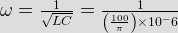
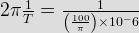
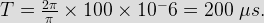
As circuit conducts only for positive half cycle, so conducting angle will be
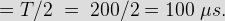 - The typical ratio of latching current to holding current in a 20 A thyristor is
The latching current is always higher than the holding current. Usually, latching currents are double or triple of holding currents.
- Circuit turn off time of an SCR is defined as the time
Under construction.
- An SCR is considered to be a semi-controlled device because
Under construction.
- An SCR having a turn ON times of 5 μs, latching current of 50 A and holding current of 40 mA is triggered by a short duration pulse and is used in the cut shown in figure. The minimum pulse width required to turn ON the SCR will be
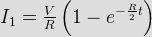
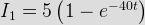
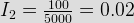
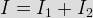
Pulse width for turn ON the SCR, will be minimum when latching current flow through it.
So, I = 0.05 A
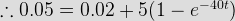
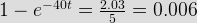
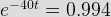
– 40 t = – 6.018
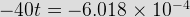
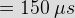 - The trigger circuit of a thyristor is shown in figure. The thyristor requires a gate current of 10 mA, for guaranteed turn ON. The value of R required for the thyristor to turn ON reliably under all conditions of Vb variation is
For proper turn ON Igmin = 10 mA. So, we have to consider minimum value of Vb,
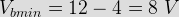
So, for reliable turn ON the value of R will be
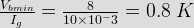 - A thyristor rated for 15 A, carries a periodic current as shown in fig. The ON state resistance of the device is 0.15 Ω. The average ON state loss in the device is
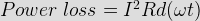
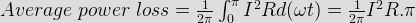
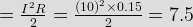 - Thyristor has anode A, cathode K and gate G and different functions named J1, J2, J3. When the thyristor is turned ON and conducting
When thyristor is turned ON J2 will break hence all junctions will be in forward biased at the time of conduction.
- The main reason for the connecting of a pulse transformer at the output stage of the thyristor triggering circuit is to
For providing electrical isolation between high power thyristor circuit and low power gate circuit a pulse transformer at the output side of the gate circuit is used.
- In a commutation circuit employed to turn off the SCR, satisfactory turn off is obtained when
Turn off time provided by the circuit must be greater than the time taken by the SCR to turn off for reliable operation.
- Which of the following does not cause permanent damage to SCR ?
Under construction.
- SCR is a
SCR is a PNPN device. So it has 4 layer and 3 junctions.
- SCR is _______________________ device.
Turn on of SCR can be done by gate triggering but not turn off.
- Which of the following is true for SCR ?
SCR has 3 modes of operations –
1. Forward blocking mode.
2. Reverse blocking mode.
3. Forward conducting mode. - Gate triggering is done when SCR is in
SCR is always triggered when it is in forward bias. If it is triggered during reverse biased condition then it may get damaged due to reverse breakdown.
- Holding current is
Under construction.
- Which of the following is true for holding current ?
Under construction.
- Holding current of a thyristor is
Generally latching current is 2 or 3 times of holding current.
- If latching current of a thyristor is 10 mA then its holding current should be
Generally latching current is 2 or 3 times of holding current.
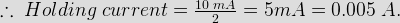 - Latching current is
Latching current is minimum amount of current above which anode current must rise to turn on the device.
Design with  by SARU TECH
by SARU TECH
www.sarutech.com
Content Credited to electrical4u.com
Online Electrical Engineering Study Site